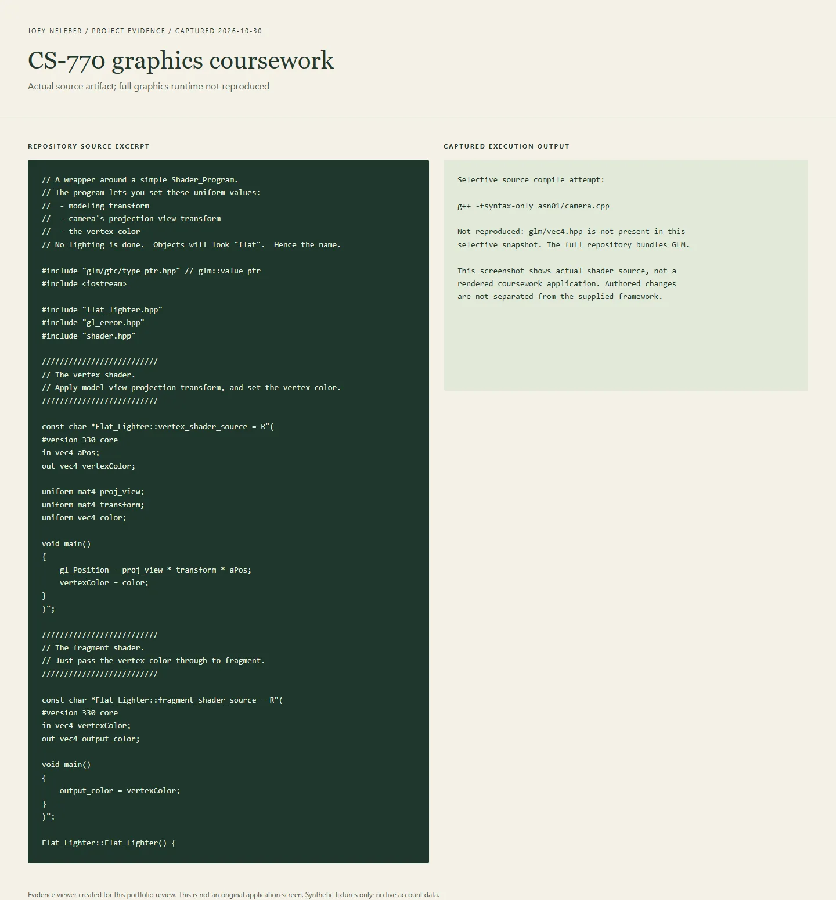

CS-770 graphics assignments
Graphics exercises with camera and lighting source.

The idea
A semester-scale collection for learning computer graphics from lower-level pieces. The repository is coursework, and that is a strength of the entry when stated plainly: it exposes the mathematics and mechanics that can disappear behind a scene editor. Source includes camera transforms and simple shader wrappers; commit history progresses through clipping, mesh generation, articulated robot parts, sphere intersections and ray-tracing-related changes. The user confirmed jan1024 is their college Git identity. Bundled teaching code and libraries still need to be separated from personal changes before attributing every file.

How it works
Choose an assignment directory and its matching build configuration rather than treating the repository as one application.
Graphics exercises use C++ with OpenGL helpers and camera/model transform code; later history records ray and intersection work.
Inside the build
Transforms made explicit
The camera.cpp establishes eye/reference/up vectors, clip bounds and viewport-to-world conversion. The flat shader multiplies projection-view, model transform and vertex position, making the coordinate pipeline visible.
Shader programs and uniforms
flat_lighter.cpp contains vertex and fragment shader source plus uniform lookup/update calls. Despite the class name, its header explicitly says no lighting is performed; it passes a chosen vertex color through as a flat result.
Beyond a single template
The commit sequence records work on clipped meshes, cylindrical components and robot joints, then rays, spheres and mirror direction. These are evidence-backed learning topics, not a claim that every bundled framework component was original.
Student-marked ray-caster implementation region
asn07/rt.cpp explicitly marks functions students must implement. The region computes an inverse look-at camera transform, converts pixel centres into view-space rays and uses first-hit selection for object colors. This is a stronger pointer to assigned implementation work than attributing every framework helper to the student.
What I learned
Geometry, numerical tolerances and visual debugging
The history records both progress and limits: an early fast-motion segfault note, later projection fixes, and an epsilon adjustment near a ray-tracing submission. That supports a story about debugging geometry and numerical assumptions rather than only showing a final image.
Course frameworks versus authored work
This entry keeps the provided framework, GLM/GLFW dependencies and student edits distinct.
Testing a geometric edge case
The new C++ fixture executes the original sphere-intersection method on centre, offset and exactly tangent rays. The tangent is excluded because the code checks a strictly positive discriminant. That makes the boundary observable without inventing a rendered application screenshot.